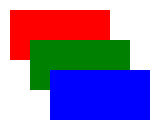
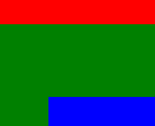

The viewBox
- The
viewBox attribute is what makes SVG scaling truly controllable.
- An SVG document describes shapes on an imaginary surface. The viewBox attribute describes what portion of that surface will be looked at, and scaled to fit the width and height of the image.
- These three images contain the same content.
- In the first, the
viewBox matches the width and height, so the picture appears as it would if there were no viewbox.

- In the second, the
width and height are doubled, but there is no viewBox so the rectangles now apppear in the corner of the image.
- In the third example a
viewBox is added that that focus on the area around the rectangles, so they rectangles now fill the image.
- In the final example, the
viewBox focuses on a small area of the image, making the rectangles appear zoomed in.